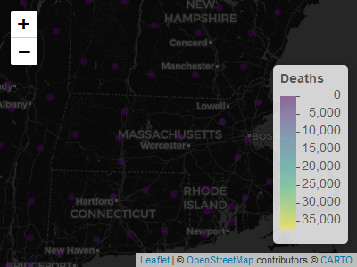
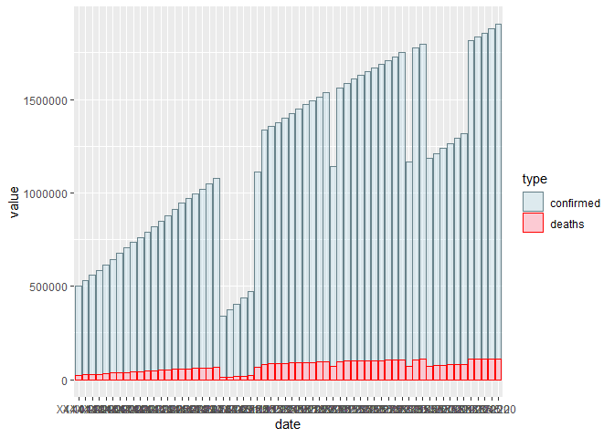

The goal of betterCallSal is to make you aware of what Covid-19 is doing to the world
You can install the released version of betterCallSal from CRAN with:
install.packages("betterCallSal")
And the development version from GitHub with:
# install.packages("devtools") devtools::install_github("zahrasalarian/betterCallSal")
This is a basic example which shows you how to solve a common problem:
library(betterCallSal) # Wrong format period = c("5-6-2020","7-8-2020") country = "US" plot <- betterCallSal::drawCovidPlot(period,country) #> #> Attaching package: 'dplyr' #> The following objects are masked from 'package:stats': #> #> filter, lag #> The following objects are masked from 'package:base': #> #> intersect, setdiff, setequal, union #> -- Attaching packages -------------------- tidyverse 1.3.0 -- #> v ggplot2 3.3.2 v purrr 0.3.4 #> v tibble 3.0.3 v stringr 1.4.0 #> v tidyr 1.1.2 v forcats 0.5.0 #> v readr 1.4.0 #> Warning: package 'ggplot2' was built under R version 4.0.3 #> Warning: package 'readr' was built under R version 4.0.3 #> -- Conflicts ----------------------- tidyverse_conflicts() -- #> x dplyr::filter() masks stats::filter() #> x dplyr::lag() masks stats::lag() #> Warning: package 'reshape' was built under R version 4.0.3 #> #> Attaching package: 'reshape' #> The following objects are masked from 'package:tidyr': #> #> expand, smiths #> The following object is masked from 'package:dplyr': #> #> rename #> Warning: `summarise_each_()` is deprecated as of dplyr 0.7.0. #> Please use `across()` instead. #> This warning is displayed once every 8 hours. #> Call `lifecycle::last_warnings()` to see where this warning was generated. #### # You Got error because your date format is not Correct # Correct format period = c("05-06-2020","07-08-2020") country = "US" plot <- betterCallSal::drawCovidPlot(period,country)
Lets see an example of global map
map <- betterCallSal::drawCovidMap("09-09-2020","Deaths") #> #> Attaching package: 'RCurl' #> The following object is masked from 'package:tidyr': #> #> complete map

You can also embed plots, for example:
